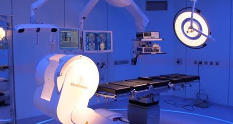
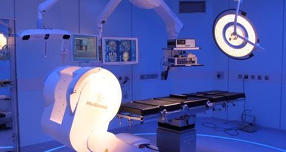

Servicios Médicos
El objetivo de este programa es poner al servicio de nuestras pacientes el
conjunto de técnicas disponibles hoy, y suficientemente avaladas por la
experiencia clínica, para conocer la adecuada formación y el correcto desarrollo
del feto antes de su nacimiento.
Iniciamos nuestra andadura en el Hospital Universitario HM Torrelodones hace años, asistiendo a todas las pacientes cuyo control de embarazo se realiza en el Servicio de Ginecología y Obstetricia de nuestro hospital, así como a pacientes a las que se le han solicitado controles por parte de ginecólogos externos a nuestro hospital. (Aproximadamente 1500 pacientes/año).
Iniciamos nuestra andadura en el Hospital Universitario HM Torrelodones hace años, asistiendo a todas las pacientes cuyo control de embarazo se realiza en el Servicio de Ginecología y Obstetricia de nuestro hospital, así como a pacientes a las que se le han solicitado controles por parte de ginecólogos externos a nuestro hospital. (Aproximadamente 1500 pacientes/año).
El Servicio está formado por psiquiatras, psicólogos clínicos y profesionales
de la enfermería altamente cualificados y coordinados para desarrollar Planes
de Atención Individualizada con estándares profesionales y éticos óptimos en
el contexto de una relación con el paciente y sus allegados especialmente
cuidada.
Desde el punto de vista diagnóstico, el Servicio de psiquiatría y psicología
clínica dispone de un amplio catálogo de recursos Clínicos, de Laboratorio,
Psicométricos, de Neuro-imagen y otros (Genética). Desde el punto de vista
terapéutico dispone de una gama amplia de procedimientos psicoterapéuticos
(terapia integradora, terapia cognitivo-conductual, terapia psicodinámica,
terapias de pareja y grupo, técnicas de rehabilitación, etc.) y biológicos
(psicofarmacoterapia, terapia electro-convulsiva, magnetoterapia,
psicocirugía, etc.) de la psiquiatría y la psicología clínica contemporáneas.
Esta apuesta por la tecnología sanitaria de vanguardia supone un gran avance
para el tratamiento de patologías neurológicas tales como tumores cerebrales,
de la glándula pituitaria o gliomas, así como para la cirugía de la epilepsia,
cirugía funcional y del párkinson y cirugía de malformaciones vasculares.
Su utilización en las intervenciones quirúrgicas de Neurocirugía es fundamental como guía para la extirpación de tumores, ya que según estudios "está demostrado estadísticamente que entre un 35% y un 60% de los casos -según el tipo de tumor- de las intervenciones quirúrgicas realizadas con esta tecnología, en caso de no haberla utilizado, hubieran quedado áreas de tumor sin resecar, por lo que habría sido necesaria una segunda intervención quirúrgica, ya que con esta técnica se consigue un grado de resección del 96% frente al 68% alcanzado con el uso de técnicas convencionales"

Su utilización en las intervenciones quirúrgicas de Neurocirugía es fundamental como guía para la extirpación de tumores, ya que según estudios "está demostrado estadísticamente que entre un 35% y un 60% de los casos -según el tipo de tumor- de las intervenciones quirúrgicas realizadas con esta tecnología, en caso de no haberla utilizado, hubieran quedado áreas de tumor sin resecar, por lo que habría sido necesaria una segunda intervención quirúrgica, ya que con esta técnica se consigue un grado de resección del 96% frente al 68% alcanzado con el uso de técnicas convencionales"
